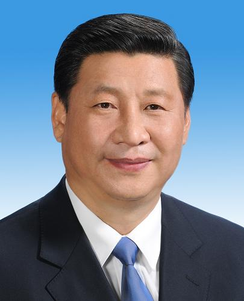

主席 - 习近平
习近平,男,汉族,1953年6月生,陕西富平人,1969年1月参加工作,1974年1月加入中国共产党,清华大学人文社会学院马克思主义理论与思想政治教育专业毕业,在职研究生学历,法学博士学位。
现任中国共产党中央委员会总书记,中共中央军事委员会主席,中华人民共和国主席,中华人民共和国中央军事委员会主席。
1969－1975年 陕西省延川县文安驿公社梁家河大队知青、党支部书记
1975－1979年 清华大学化工系基本有机合成专业学习
1979－1982年 国务院办公厅、中央军委办公厅秘书(现役)
1982－1983年 河北省正定县委副书记
1983－1985年 河北省正定县委书记,正定县武装部第一政委、党委第一书记
1985－1988年 福建省厦门市委常委、副市长
1988－1990年 福建省宁德地委书记,宁德军分区党委第一书记
1990－1993年 福建省福州市委书记、市人大常委会主任,福州军分区党委第一书记
1993－1995年 福建省委常委,福州市委书记、市人大常委会主任,福州军分区党委第一书记
1995－1996年 福建省委副书记,福州市委书记、市人大常委会主任,福州军分区党委第一书记
1996－1999年 福建省委副书记,福建省高炮预备役师第一政委
1999－2000年 福建省委副书记、代省长,南京军区国防动员委员会副主任,福建省国防动员委员会主任,福建省高炮预备役师第一政委
2000－2002年 福建省委副书记、省长,南京军区国防动员委员会副主任,福建省国防动员委员会主任,福建省高炮预备役师第一政委
(1998－2002年清华大学人文社会学院马克思主义理论与思想政治教育专业在职研究生班学习,获法学博士学位)
2002－2002年 浙江省委副书记、代省长,南京军区国防动员委员会副主任,浙江省国防动员委员会主任
2002－2003年 浙江省委书记、代省长,浙江省军区党委第一书记,南京军区国防动员委员会副主任,浙江省国防动员委员会主任
2003－2007年 浙江省委书记、省人大常委会主任,浙江省军区党委第一书记
2007－2007年 上海市委书记,上海警备区党委第一书记
2007－2008年 中央政治局常委、中央书记处书记,中央党校校长
2008－2010年 中央政治局常委、中央书记处书记,中华人民共和国副主席,中央党校校长
2010－2012年 中央政治局常委、中央书记处书记,中华人民共和国副主席,中共中央军事委员会副主席,中华人民共和国中央军事委员会副主席,中央党校校长
2012－2013年 中央委员会总书记,中共中央军事委员会主席,中华人民共和国副主席,中华人民共和国中央军事委员会副主席
2013－ 中央委员会总书记,中共中央军事委员会主席,中华人民共和国主席,中华人民共和国中央军事委员会主席
中共第十五届中央候补委员,十六届、十七届、十八届中央委员,十七届中央政治局委员、常委、中央书记处书记,十八届中央政治局委员、常委、中央委员会总书记。第十一届全国人大第一次会议当选为中华人民共和国副主席。十七届五中全会增补为中共中央军事委员会副主席。第十一届全国人大常委会第十七次会议任命为中华人民共和国中央军事委员会副主席。十八届一中全会任中共中央军事委员会主席。第十二届全国人大第一次会议当选为中华人民共和国主席、中华人民共和国中央军事委员会主席。